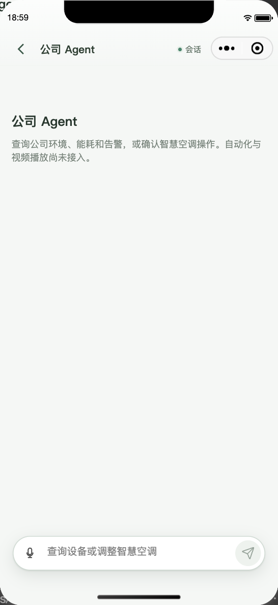
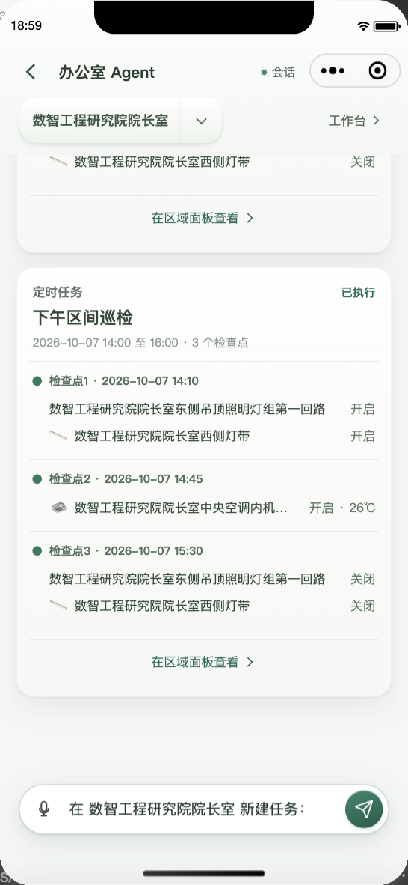
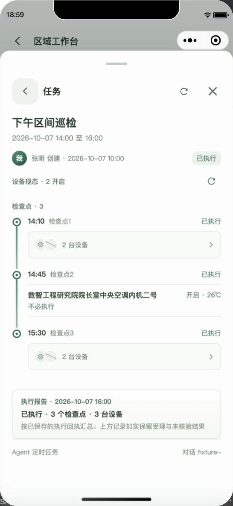
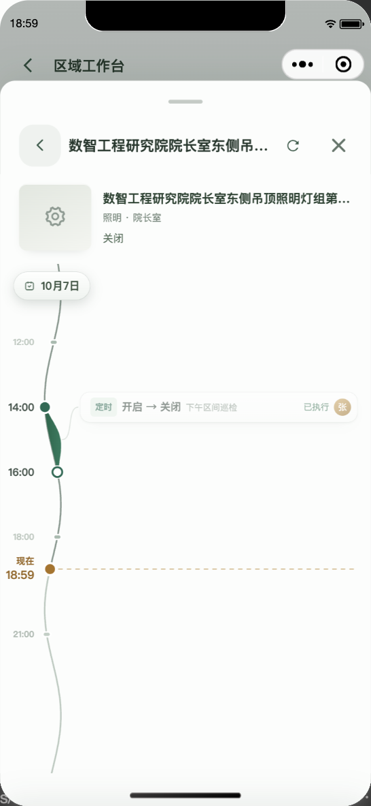
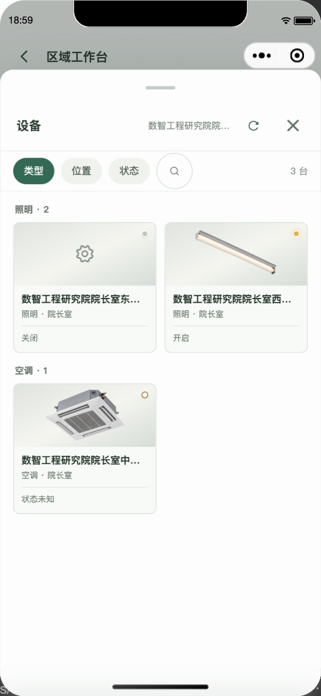
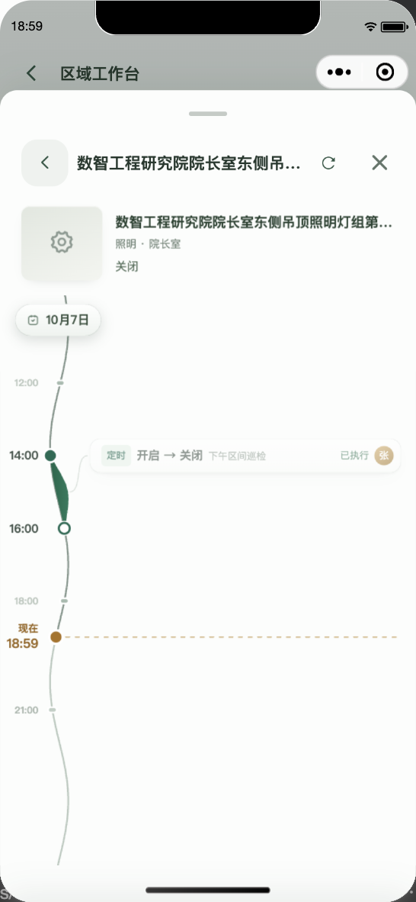
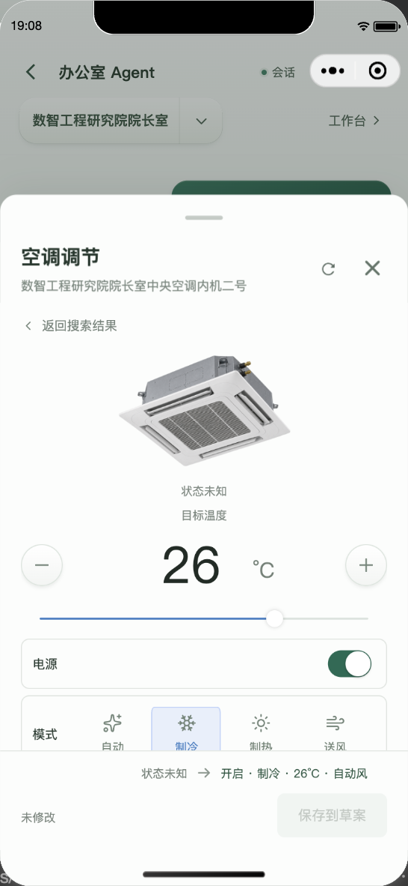
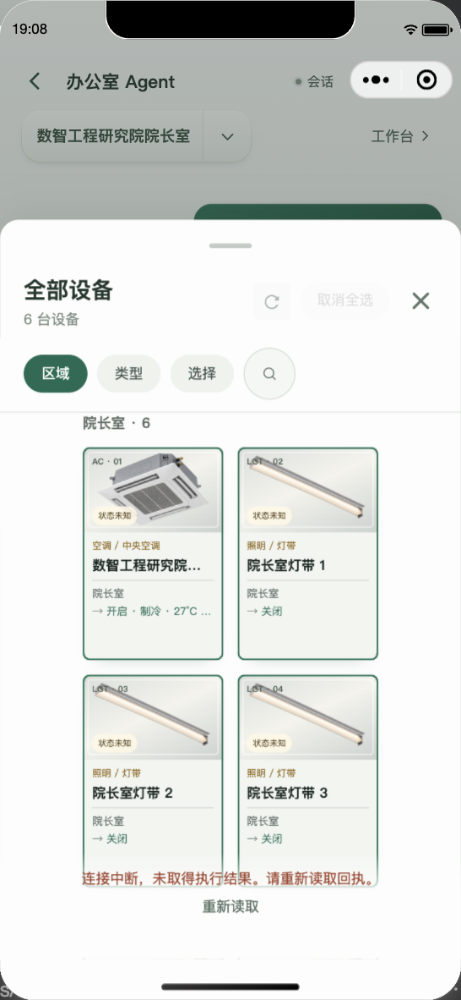
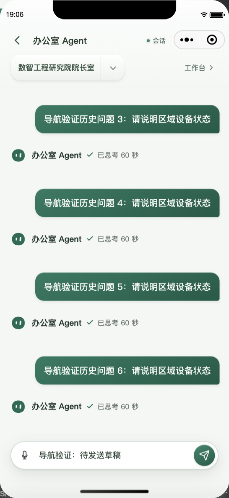

导航改进后的实际界面
检查范围是物联助手的全部页面与临时层。页面身份、上一层与整层关闭、等待反馈、离开后恢复，沿同一套规则实现。保留现有纸材、玉绿、单层抽屉和 B6 时间轴。
验证记录与限制 · 规格、问题状态与交接 · 改造前的完整检查
这些是微信模拟器实际画面，内容由隔离 UI 夹具提供。没有真实设备执行、后台调度或通知投递。原生真机手势及生产 H5 仍待验。
公司 Agent 的导航栏

原先中央的小“返回总览”按钮归并到左侧返回与标题。返回跟随实际页面栈，直达也有默认父页。
- 总览分别进入公司与办公室，会话菜单只管理会话。
- 办公室的区域名负责选择区域，“工作台”负责前往页面。
- 抽屉左侧回一层，右侧 X 关闭整层。
- 系统返回先收临时层，再退出宿主页。
- 错误在内容现场，标题和出口保持稳定。
开发模拟器仍有原生切页等待。本次完整样本为 route 635ms / firstRender 42ms；样本不足以证明延迟已消除。
页面与逐层返回





编辑与失败不会丢现场


